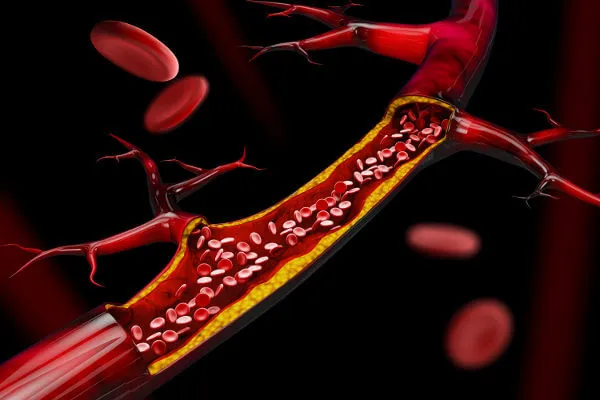

Sistema Cardiovascular
O sistema cardiovascular, também conhecido como sistema circulatório, é responsável
pelo transporte de sangue, oxigênio, nutrientes e outros elementos essenciais para as células do corpo, além de
remover resíduos metabólicos.
É um sistema fechado composto por vários órgãos e estruturas, que trabalham
juntos para manter a homeostase e a saúde geral do organismo.
 O sistema cardiovascular diz respeito ao sistema formado pelo coração e vasos sanguíneos.
O sistema cardiovascular diz respeito ao sistema formado pelo coração e vasos sanguíneos.Crédito da Imagem: Shutterstock
O sistema cardiovascular, também chamado de sistema circulatório, é o sistema responsável por garantir o transporte de sangue pelo corpo, permitindo, dessa forma, que nossas células recebam, por exemplo, nutrientes e oxigênio. Esse sistema é formado pelo coração e pelos vasos sanguíneos.
Tópicos deste artigo
1 - Coração2 - Partes do Coração
3 - Sistema Cardiovascular
4 - Componentes do Sistema Cardiovascular
5 - Funções do Sistema Cardiovascular
Componentes de Sistema de Cardiovascular
O sistema cardiovascular é composto pelas seguintes estruturas
O coração dos seres humanos, assim como o dos outros mamíferos, é um órgão muscular formado por quatro câmaras: dois átrios e dois ventrículos. Os átrios são as câmaras responsáveis por garantir o recebimento do sangue no coração, enquanto os ventrículos são as câmaras responsáveis por garantir o bombeamento do sangue para a fora do coração.
No lado esquerdo do coração, percebe-se a presença apenas de sangue rico em oxigênio, enquanto do lado direito observa-se a presença apenas de sangue rico em gás carbônico. No coração, há ainda a presença de quatro válvulas que impedem o refluxo do sangue, permitindo, desse modo, um fluxo contínuo.
→ Vasos Sanguíneos  "Os vasos sanguíneos são responsáveis por garantir o transporte de sangue pelo corpo." Vasos sanguíneos são um grande sistema de tubos fechados por onde o sangue circula. Os três principais vasos sanguíneos encontrados no corpo são as artérias, veias e os capilares. Veja, a seguir, algumas características básicas desses três vasos: 1 - Artérias: As artérias são vasos que levam o sangue, a partir do coração, para os órgãos e tecidos do corpo. Nesses vasos, o sangue corre em alta pressão. As artérias ramificam-se em arteríolas.2 - Capilares: São vasos sanguíneos muito delgados que garantem a troca de substâncias entre o sangue e os tecidos do corpo.
3 - Veias: Os capilares sanguíneos convergem para as chamadas vênulas, as quais convergem para as veias. As veias são os vasos que garantem que o sangue retorne ao coração. Nesses vasos, o sangue corre em baixa pressão e para evitar o refluxo do sangue as veias são dotadas de valvas.
A circulação nos seres humanos